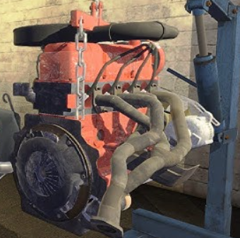

Engine & Exhaust
- Crankshaft: Into block (No bolts)
- Main Bearing x5: 10x2
- Pistons x4: 8x2
- Crankshaft Pulley: 13x1 Align
- Aux Shaft: 6x3
- Aux Shaft Sprocket: 14x1
- Head Gasket: (No bolts)
- Cylinder Head: 9x10
- Camshaft: 6x2
- Camshaft Sprocket: 14x1 Align
- Water Pump: 7x4
- Water Pump Pulley: 8x4
- Distributor: S x 1 Tune
- Rockers x8: S x 2 (each) Tune
- Rocker Cover: 7x8
- Thermostat & Housing: 8x2
- Fuel Pump: 7x2
- Timing Belt Cover: 6x2
- Alternator: 11x1
- Oil Pump & Filter: 6x2 (Filter by hand)
- Oil Pan: 7x10 | Drain Plug: Size 13
- Starter: 8x3, 6x1
- Engine Mounts: 12x2 (Hoist: 10)
- Carburettor: 9x5 Tune
- Exhaust Manifold/Headers: 9x8
- Exhaust Front: 8x2, 7x1
- Exhaust Rear: 7x2, 9x1
- Muffler: 8x1
